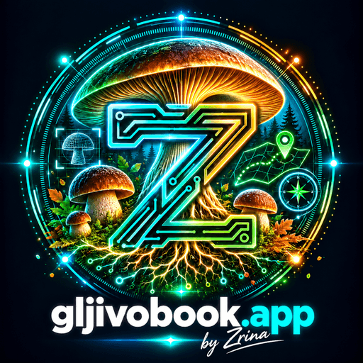

U džepu, dok istražuješ šumu.
gljivobook spaja 169 vrsta iz hrvatske mikološke literature s filtrima po regiji, sezoni i stablu. Spremi nalaz u terenski dnevnik, dodaj fotografije i vrati se svojim bilješkama čak i kada u šumi nema signala.
gljivobook.app je terenski mikološki vodič i dnevnik za znatiželjne berače — s enciklopedijom 169 vrsta, vizualnim ključem, lokalnim zapisima i alatima za planiranje izlaska u prirodu.

Aplikacija, fotografije i AI analiza služe kao pomoć i ne mogu potvrditi da je gljiva sigurna za jelo. Nikada ne konzumiraj gljivu samo na temelju rezultata aplikacije — zatraži stručnu provjeru uživo.
Mikološka enciklopedija susreće terenske alate — od uvjeta rasta i prepoznavanja do vlastite karte nalaza.
gljivobook spaja 169 vrsta iz hrvatske mikološke literature s filtrima po regiji, sezoni i stablu. Spremi nalaz u terenski dnevnik, dodaj fotografije i vrati se svojim bilješkama čak i kada u šumi nema signala.
Odaberi alat za prikaz njegova toka podataka i uloge u terenskom vodiču.
Odaberi modul za sažetak funkcije i shemu toka podataka. Nijedan modul ne može potvrditi jestivost gljive.
Zavirite u sučelje enciklopedije, filtara i barometra prije otvaranja aplikacije.
Otvori vodič za pregled vrsta, vizualni ključ, aktualne uvjete i vlastiti terenski dnevnik. Dostupnost pojedinih online alata ovisi o internetskoj vezi.
Informativni vodič · provjeri nalaz sa stručnom osobom · čuvaj šumu